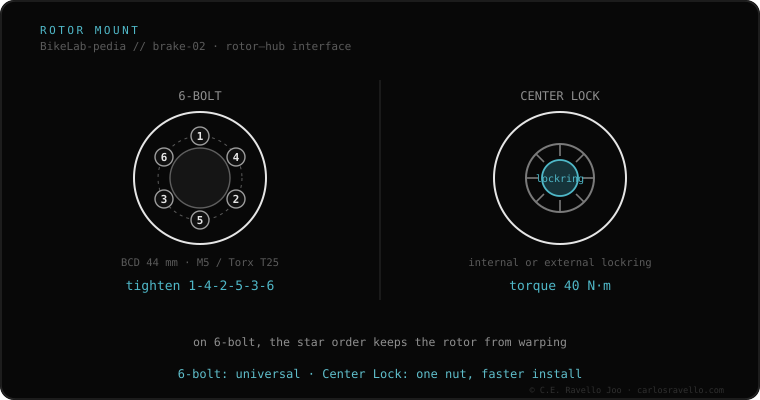

Center Lock is Shimano's splined rotor mount: the rotor slides onto the hub splines and is fixed with a single central lockring at 40 N·m. It's faster to fit and remove than 6-bolt and centers the rotor perfectly. There are two lockring types: internal (tightened with a cassette-type tool like FR-5) and external (with a bottom-bracket tool; required on 15/20 mm thru-axles). Although it's Shimano's, SRAM adopted it: it's an open standard.
If mounting the rotor took 20 seconds and a single nut, you have Center Lock. Fast, centered and increasingly common.
Instead of 6 bolts, the rotor engages the hub splines and locks with a central lockring at 40 N·m. That removes the warping risk from uneven tension and speeds up swaps. Mind the lockring type: the internal one uses the cassette tool (won't fit thick axles), and the external one, using the BB tool, is required on 15/20 mm front thru-axle hubs.

It fits only hubs with Center Lock splines (Shimano, SRAM and many DT Swiss). It accepts Center Lock rotors of any brand (it's an open standard) and, with a specific adapter, 6-bolt rotors. It won't fit 6-hole hubs.
If you don't know which mount, rotor or fluid your brake uses, send us the case. Real diagnosis, nothing to sell you. Message us on WhatsApp
40 N·m. It's high: you must really tighten it, even though the ratchet clicks; if left loose, the rotor wobbles and damages the splines.
Depends on the lockring: the internal one uses the cassette tool (FR-5); the external one uses the BB tool (16-notch), required on 15/20 mm front axles.
Yes. The Center Lock spline is an open standard both brands use identically.
© 2026 BikeLab Studio. Content under CC BY 4.0: you may copy, translate and publish it, even for commercial purposes. Citation is mandatory. Without attribution, the license terminates automatically (CC BY 4.0, §6.a) and the use becomes copyright infringement: we request the removal of the content and its deindexing. · Design and ownership: Carlos Ravello Joo